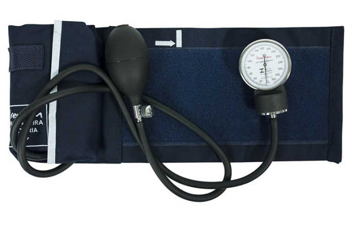
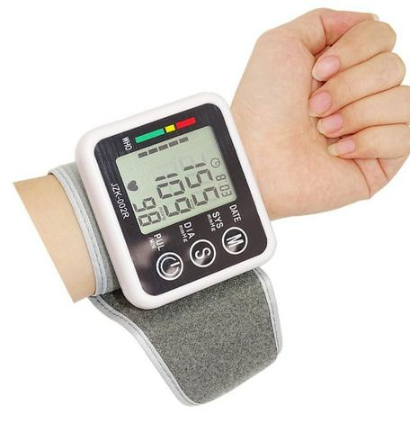

Pressão arterial
O coração é o órgão muscular responsável por bombear o sangue para o nosso corpo. Quando o sangue é impulsionado, ele acaba exercendo certa força contra as paredes das artérias. Essa força é chamada de pressão arterial e pode ser definida como a pressão que o sangue em circulação exerce nas paredes de nossas artérias.
Os valores normais da pressão arterial são determinados por ações do sistema nervoso, sistema cardiovascular e os rins. Distúrbios nesses sistemas e órgãos podem alterar a pressão arterial e causar problemas, como a hipertensão.
Passo a passo: como medir a pressão arterial?
Passo a passo: como medir a pressão arterial?
Esfigmomanômetro mecânico:
Após o paciente estar corretamente posicionado e a braçadeira colocada, devem ser realizados os seguintes passos:
• encontre a pulsação na região do cotovelo, que deve estar levemente flexionado com a palma da mão virada para cima — assim que sentir, coloque o estetoscópio em cima;
• a válvula do esfigmomanômetro deve estar fechada e o esteto já deve estar no ouvido de quem verificará a medida;
• encha a braçadeira até que o ponteiro chegue a 180 mmHg — nesse momento, abra a válvula lentamente;

• enquanto isso, preste atenção no som que chega ao estetoscópio e no ponteiro do medidor: a batida mais forte (normalmente a primeira) é a pressão máxima e a última batida é a mínima.
• Depois que isso for feito, pode liberar a válvula e remover todo o ar da braçadeira. Retire-a da pessoa.
Medidor de pressão digital:
Essa é uma forma muito prática de medir a pressão e você não precisará da ajuda de ninguém. A braçadeira deve ficar posicionada da mesma forma que descrevemos acima, assim como a sua posição. Após isso, basta ligar o botão (se vier em inglês, deve ter a palavra “start” próxima). O medidor começará a insuflar e, por si só, parará quando chegar o momento.

Automaticamente ele esvazia a braçadeira aos poucos e, ao final, o medidor dará o sinal sonoro, avisando que o processo foi concluído. Na tela você verá a pressão máxima e a mínima. Alguns também mostram outras medidas, como a frequência cardíaca.
Outras opções:
Há outros aparelhos que podem medir a sua pressão, como o aparelho digital de pulso, que também oferece muita praticidade e conforto. Normalmente, ele vem com um velcro para se ajustar facilmente ao tamanho do seu pulso, sendo ideal para pessoas obesas quando a braçadeira do medidor tradicional não for suficiente, por exemplo.
Assim como no medidor digital descrito no tópico anterior, o aparelho de pulso é bastante intuitivo. Os botões de liga e desliga são fáceis de identificar e o visor também indica todos os dados.
Lembre-se também de calibrar, periodicamente, o seu aparelho para não obter valores errados. Você pode fazer isso em locais que vendem artefatos para a área de saúde, por exemplo.
Valores da pressão arterial
A pressão arterial normal é, portanto, aquela na qual as artérias não ficam sob estresse e o coração não fica sobrecarregado. Atualmente, os níveis de pressão arterial para adultos, idosos e adolescentes são divididos da seguinte forma:
• PRESSÃO ARTERIAL NORMAL – pacientes com pressão sistólica menor que 120 mmHg e pressão diastólica menor que 80 mmHg.
• PRÉ-HIPERTENSÃO – pacientes com pressão sistólica entre 120 e 129 mmHg ou pressão diastólica menor que 80 mmHg.
• HIPERTENSÃO ESTÁGIO 1 – pacientes com pressão sistólica entre 130 e 139 mmHg ou pressão diastólica entre 80 e 89 mmHg.
• HIPERTENSÃO ESTÁGIO 2 – pacientes com pressão sistólica acima de 140 mmHg ou pressão diastólica acima de 90 mmHg.
• CRISE HIPERTENSIVA – pacientes com pressão sistólica acima de 180 mmHg ou pressão diastólica acima de 110 mmHg.
Os valores descritos acima são usados para diagnosticar e classificar a hipertensão, porém, eles não servem como alvo para o tratamento. Nos pacientes hipertensos em uso de medicamentos, os valores que desejamos alcançar são:
• Adolescentes e adultos: a pressão arterial deve ficar abaixo de 140/90 mmHg.
• Adolescentes e adultos: a pressão arterial deve ficar abaixo de 140/90 mmHg.